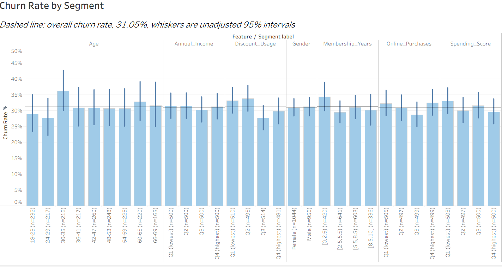
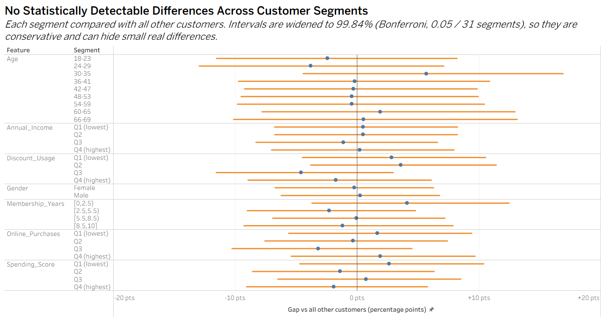
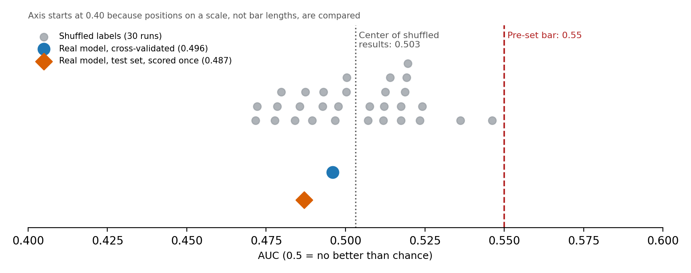

SQL
Writing clean, performant queries to extract, join and aggregate data at scale.
I'm Jude Ezugwu, a finance and data professional with 3 years of experience. I use SQL, Python and Excel to solve business problems, and Power BI and Tableau to share the answers in a form people can act on.
The tools I use to get data, analyse it and present it to the people who make decisions.
Writing clean, performant queries to extract, join and aggregate data at scale.
Financial models, reconciliations and analysis that finance teams can audit and reuse.
Cleaning, exploring and modelling data, with statistical tests that separate signal from noise.
Interactive reports with solid data models, DAX measures and refreshable pipelines.
Visual storytelling and dashboards that make the key insight obvious at a glance.
Complete analyses, from the business question to the method and the answer.
A retention team wanted to target offers using the customer details they already held. I tested whether those details could actually identify who was likely to leave.
Charts from the churn analysis. Select any chart to open it full size.



I'm a finance and data professional with 3 years of experience across finance and data analytics. I use SQL, Python and Excel to solve business problems, from framing the right question and getting the data into shape to presenting results so decision-makers can act on them.
I care about being honest with data: checking whether a pattern is real before anyone builds a strategy on it.